Booklet Band UAB
Aftertone
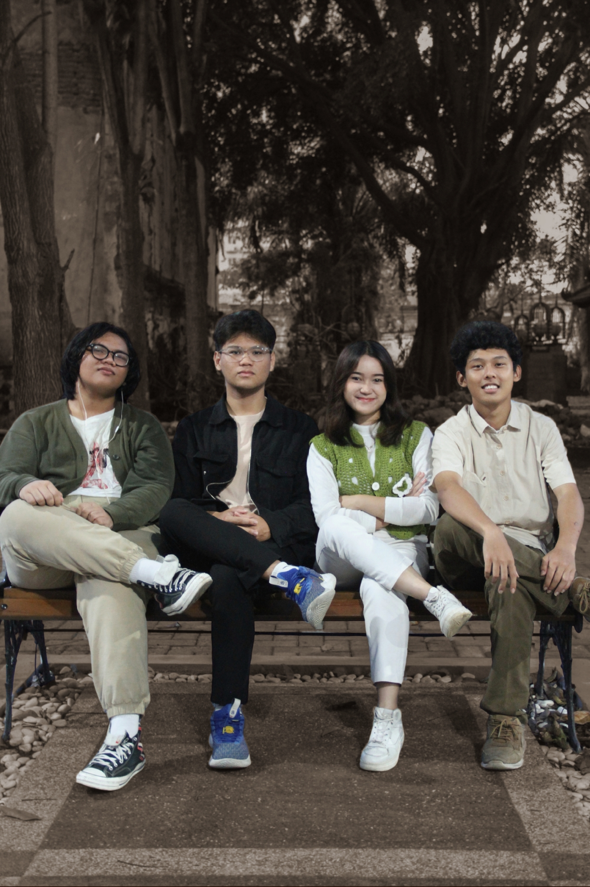
Aftertone is a modern band crafting a sleek, signature sound defined by smooth grooves and lush harmonies. Their music feels both timeless and current effortlessly cool, emotionally rich, and built to resonate with every listener.
Role :
Friskila Agustina Simamora - Vocal
Eric Fausta Ariyanto - Vocal
Yohanes Charles Soesanto - Bass
Naufal Asyraf - Drum
Heavensent
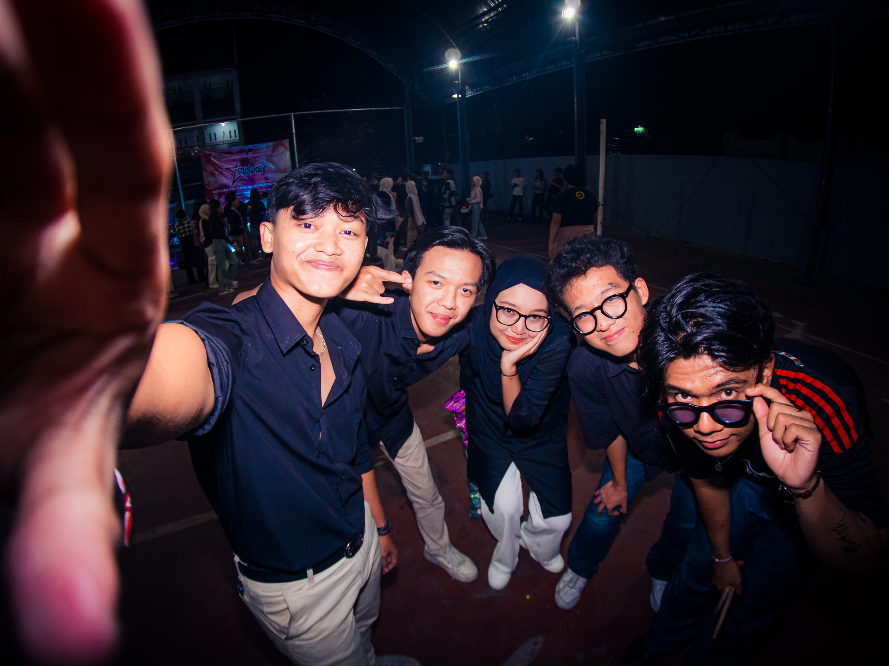
Heaven Sent adalah band pop-folk yang lahir dari keinginan untuk merangkai perasaan menjadi lagu. Heaven Sent menghadirkan musik yang intim, jujur, dan menyentuh dengan lirik puitis yang membisikkan kisah-kisah tentang pencarian makna, luka yang lembut, dan harapan yang samar. Melodi-melodi akustik yang hangat berpadu dengan vokal emosional, menciptakan suasana yang kontemplatif sekaligus mengikat secara emosional. Heaven Sent hadir bukan hanya untuk didengar, tapi untuk dirasakan.
Role :
Anindya Dinda Bayu Arshanty - Vocalist
Muhammad Azhar Ali - Keyboard
Finaluis Vio Danar Putra - Bass
Joshua Adriel Tjokro - Guitar
Reo Tegar Lintang Redjan - Drum
The Pantekers

Aftertone is a modern band crafting a sleek, signature sound defined by smooth grooves and lush harmonies. Their music feels both timeless and current effortlessly cool, emotionally rich, and built to resonate with every listener.
Role :
Syah Reza - Vocal
Galvin Rasyad - Guitar
Yohanes gurning - Bass
Albelda Alnirof - Drum
Blackletter
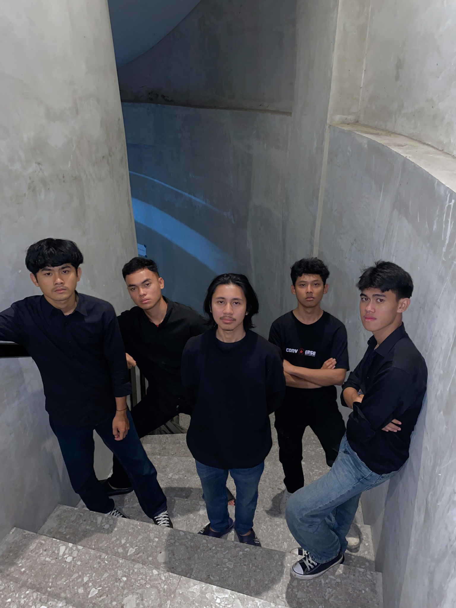
Signed in distortion, delivered with a punch
Role :
Rakryan Rangga Jagad Sablilhaq- Vocal
Harsya Alfan Patriawan - Guitar
Eka Putra Wibowo - Guitar
Eric Fausta Ariyanto - Bass
Ulung Mas Jadid - Drum
Dawned
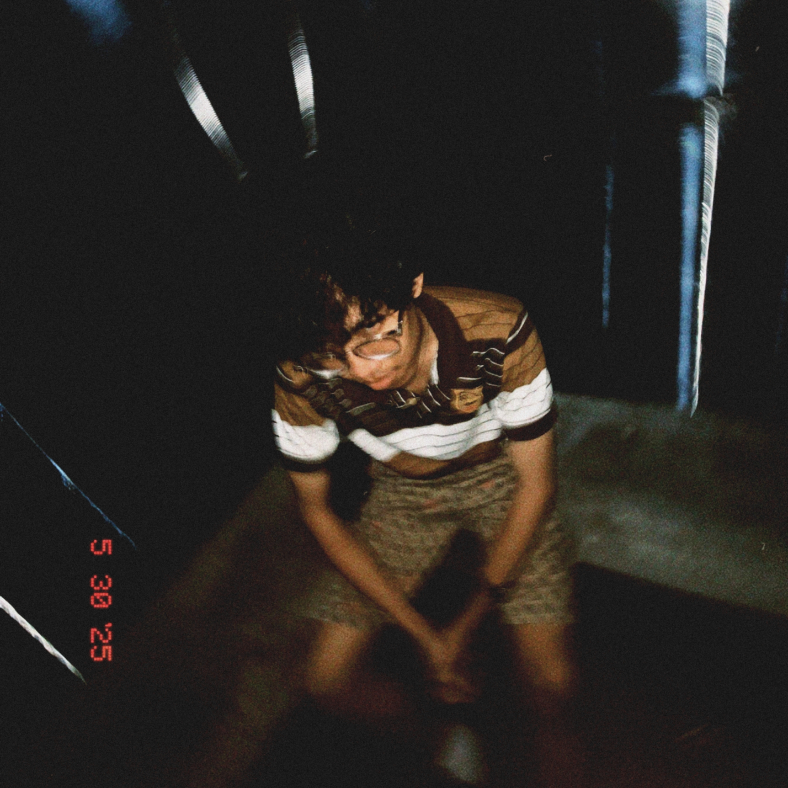
Persembahan terakhir dari project solo seorang pemuda yang tidak tau arah tumbuh kembangnya. Penuh dengan angan angan "Maybe in another life, it would've been better.", kalo ga percaya cek aja dawned di spotify, apple music, dan streaming platform lain favorit kalian wkwkwkk
Role :
Achmad Fajar Fadillah - Vocal, Guitar
Die 2 AM

Die 2 AM merangkum kerasnya kehidupan dalam pukulan tuts dan tarikan napas. Mereka membuktikan bahwa musik Rock yang paling keras bukanlah yang paling bising, melainkan yang paling lantang menyuarakan kenyataan.
Role :
Muhammad Alvan Javierul Haq - Keyboard, Guitar, Harmonika, Vokal, Harmonika
Triumvirate
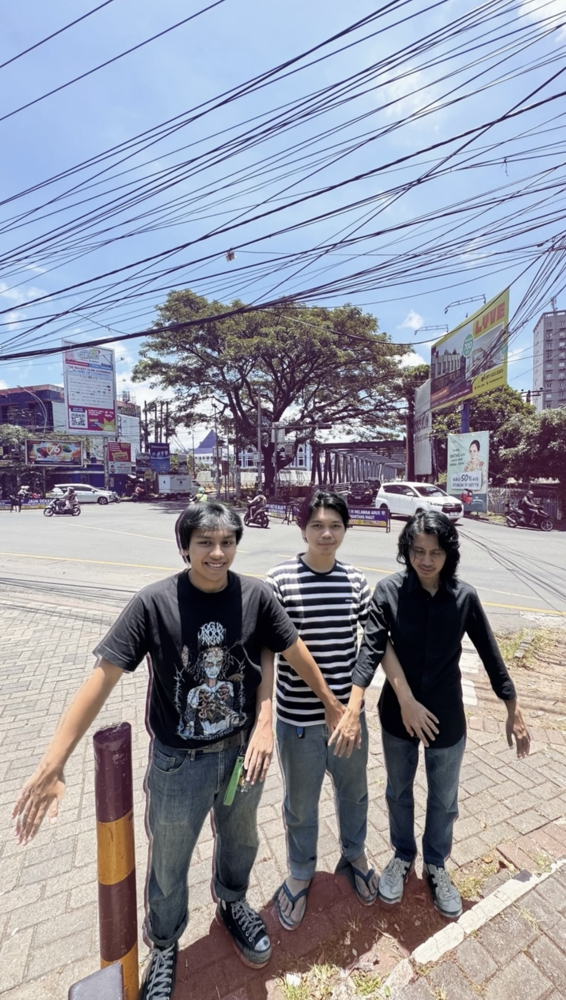
Emerging from Malang in 2025, Triumvirate is an Alternative Rock outfit defined by the clash of gritty distortion and melodic sweetness. Their music dives deep into social unrest and romantic narratives, delivered through high-octane live performances that are set to dominate the local circuit.
Role :
Harsya ALfan Patriawan - Guitar & Vocal
Akhlis Fadli Muhammad Syauqi - Bass
Anand Satya Sancita - Drum
The Djuandas
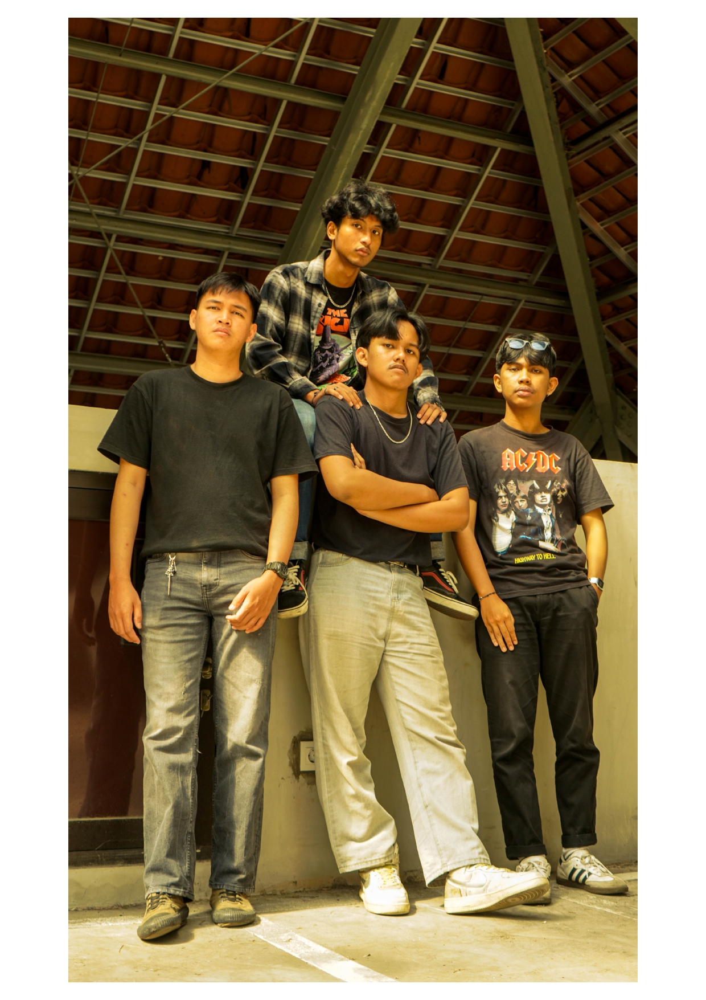
The Djuandas is a wild blend of rock, hard rock, and alternative rock loud, aggressive, and untamed. Driven by heavy riffs, raw distortion, and reckless energy, their sound feels chaotic, fierce, and unapologetically alive.
Role :
Maheswara Bono Nugroho - Vocal
Bangun Noval Ananto - Guitar
Dhefiz Ahmad Zhafir - Guitar
Muhammad Alif Rahmat Maulana - Bass
Chatarsis
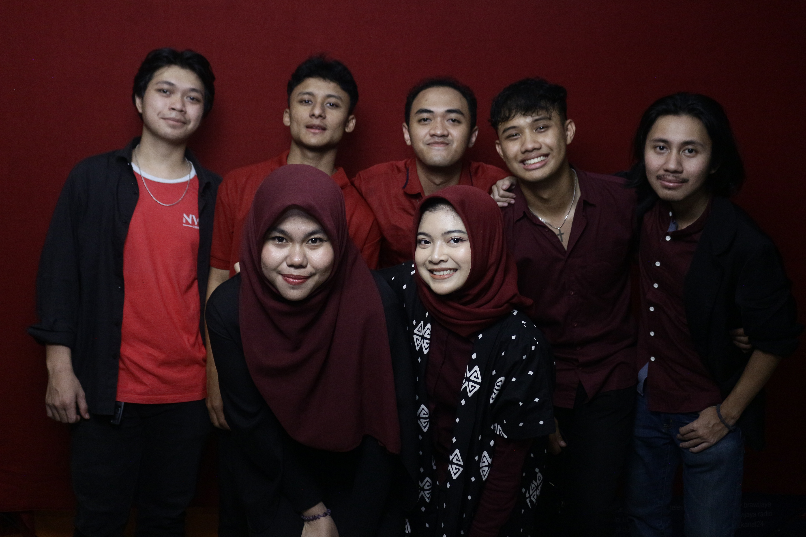
Catharsis adalah band pop yang terbentuk dari kesamaan visi dan selera music. Nama Catharsis diambil dari istilah psikologi yang berarti pelepasan emosi, karena buat kami, musik adalah cara paling jujur untuk mengekspresikan dan melepaskan semuanya.
Catharsis bukan soal menjadi sempurna, tapi soal menjadi nyata lewat musik yang kami mainkan dan cerita yang kami bawa
Role :
Kristo Aletheio - Vocal
Talitha Zada Rahmadifa - Vocal
Julia Rivaldo - Keyboard
Harsya Alfan Patriawan - Guitar
Akhlis Fadli Muhammad Syauq - Bass
Justin EVan - Drum
R3CAB
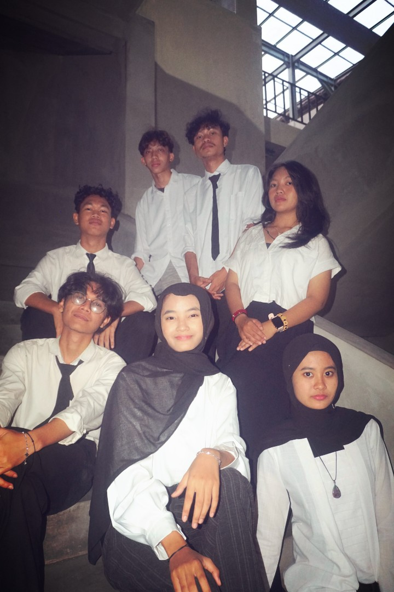
R3CAB is a pop rock band whose name comes from the initials of its members, symbolizing unity within diversity. Different personalities come together to create one shared sound simple, sincere, and meaningful. Through their music, R3CAB expresses a single feeling: togetherness in every note.
Role :
Renata Almira Putriferdi - Vocal
Adelia Dini Safutri - Vocal
Chelsea Eunike Mareta Sucipto - Keyboard
Rendhi Juliantara - Guitar
Rian Christiawan - Guitar
Arya Abimanyu - Bass
Dilwa Biyan Anggara - Drum
Sefiona
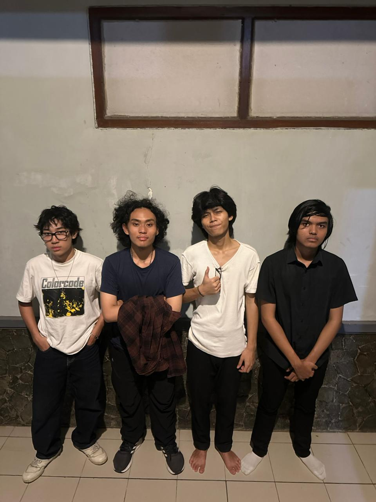
R3CAB is a pop rock band whose name comes from the initials of its members, symbolizing unity within diversity. Different personalities come together to create one shared sound simple, sincere, and meaningful. Through their music, R3CAB expresses a single feeling: togetherness in every note.
Role :
Gibran Al Mubarok - Vocal & Bass
Maulana Rheza Saputra - Guitar
Muhammad Kinan Novandy - Guitar
Gerrard Arif Hastaryo - Drum
Noctaria
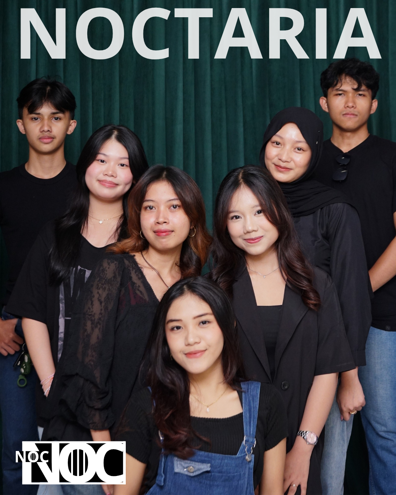
Noctaria merupakan grup musik yang memadukan elemen Pop dan Jazz dalam aransemen elegan serta modern. Fokus utama adalah menyajikan musik berkualitas yang tetap easy listening, sesuai untuk kebutuhan hiburan profesional maupun acara formal lainnya.
Role :
Valeria Nadine - Vocal
Anzani Nida - Vocal
Evelyn Litany Charentzia - Vocal
Aqueena Mahya Nabila - Guitar
Awalia Zakiyatussalamah - Keyboard
Akhtahira Fitrandi Yusuf - Bassist
Muhammad Athallah Ghandy Nugroho - Drum
Sphere Dyson

Sphere Dyson is the new form of ANORA, a band born on March 22, 2025, and officially changed its name on November 22. With a more complete lineup and new members, Sphere Dyson enters a different musical realm-bringing a unique genre that is more challenging and more experimental than ANORA. The exploratory and atmospheric essence remains the same only now projected on a larger, bolder, and more futuristic scale.
Role :
Amora - Vocal
Alfan - Guitar
Alip - Guitar
Eric - Keyboard
Uqi - Bass
Anand - Drum
Sevensky
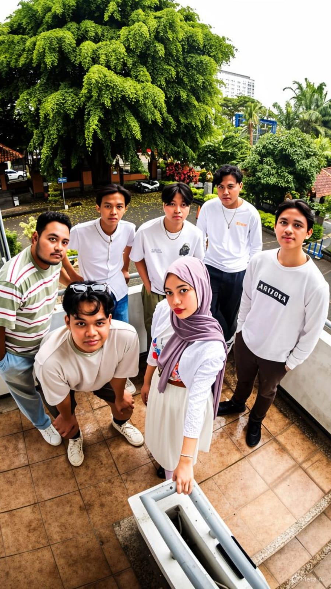
SevenSky adalah grup indie pop yang merepresentasikan kebebasan berekspresi layaknya langit tak berbatas. Nama "SevenSky" melambangkan tekad para personilnya untuk terus mengeksplorasi musik, menghadirkan karya yang mampu menaungi berbagai nuansa emosi. Dengan musik pop sebagai dasar, SevenSky memadukan berbagai elemen genre untuk menciptakan harmoni yang dinamis
Role :
Moh. Iqbal Lamade - Vocal
Bernardinus Guruh S. S. - Guitar
Muhammad Azhar Ali - Keyboard
Fadhlan Hafizh R. Y. - Bass
Rafly Achmad B - Drum
Sylphen
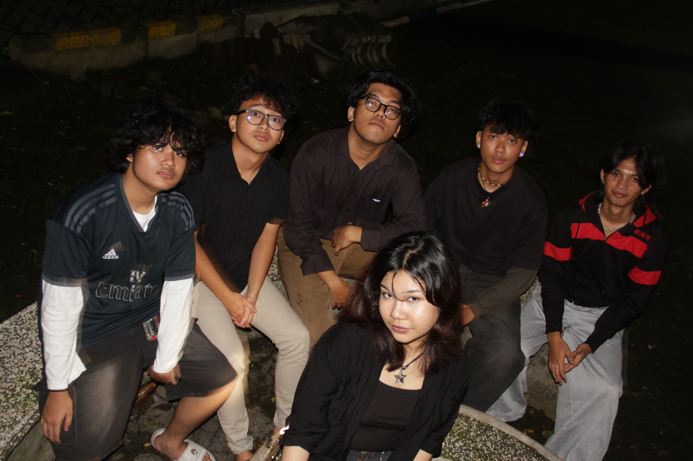
Terbentuk dari 6 personil dengan latar belakang musik yang sangat berbeda, Sylphen adalah band Pop/RnB yang membawa suara baru tanpa takut mencampurkan berbagai energi menjadi satu. Sesuai namanya yang terinspirasi dari mahkluk mitologi angin, Sylphen bisa meniupkan semilir yang menenangkan atau topan yang mengacaukan
Role :
Amelia Khariunnisa Syukri - Vocal
Rahyan Aqilur Rahman - Guitar
Adrian Semeion Immanuek - Guitar
Pieter Wenesdy Octaviano Arta - Keyboard
Juve Alvaro Winraputra - Bass
Briliant Ghithraf Albari - Drum
Telucast
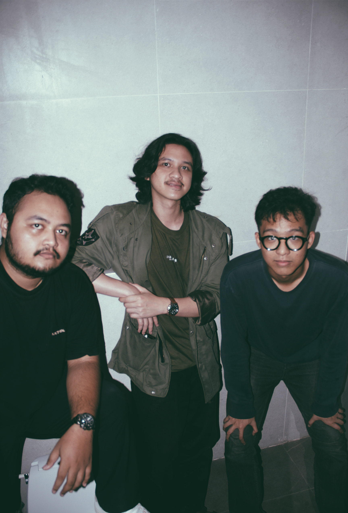
Telucast adalah band Blues Rock yang berasal dari Malang. Mengusung formasi Blues Trio, mereka siap membawa warna baru di kancah musik indie lokal. Terinspirasi dari sang legenda B.B King, Eric Clapton, hingga John Mayer, Telucast akan membawakan Blues organik ke skena musik terkini
Role :
Joshua Adriel Tjokro - Vocal & Guitar
Bernardinus Guruh S. S. - Guitar
Fadhlan H. R. Yusuf - Bass